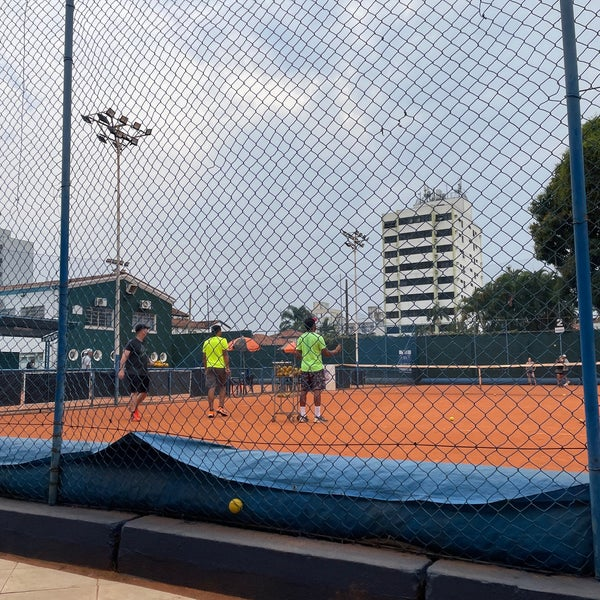
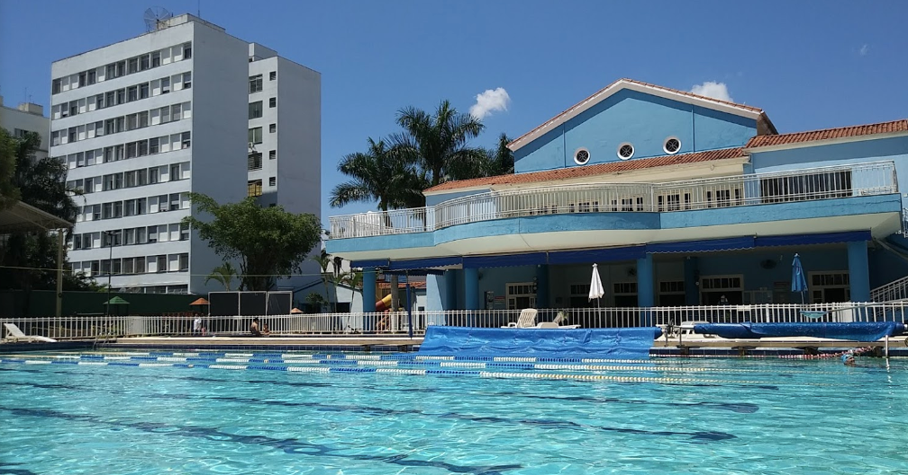
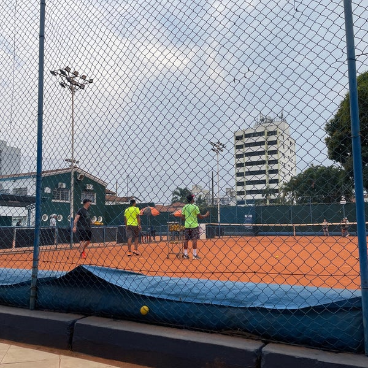
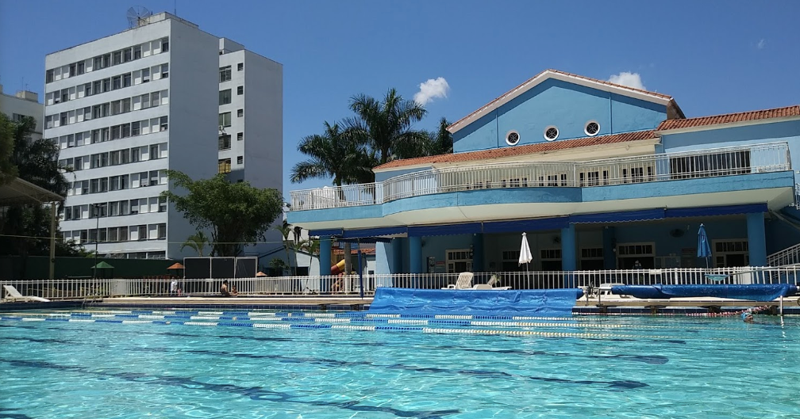
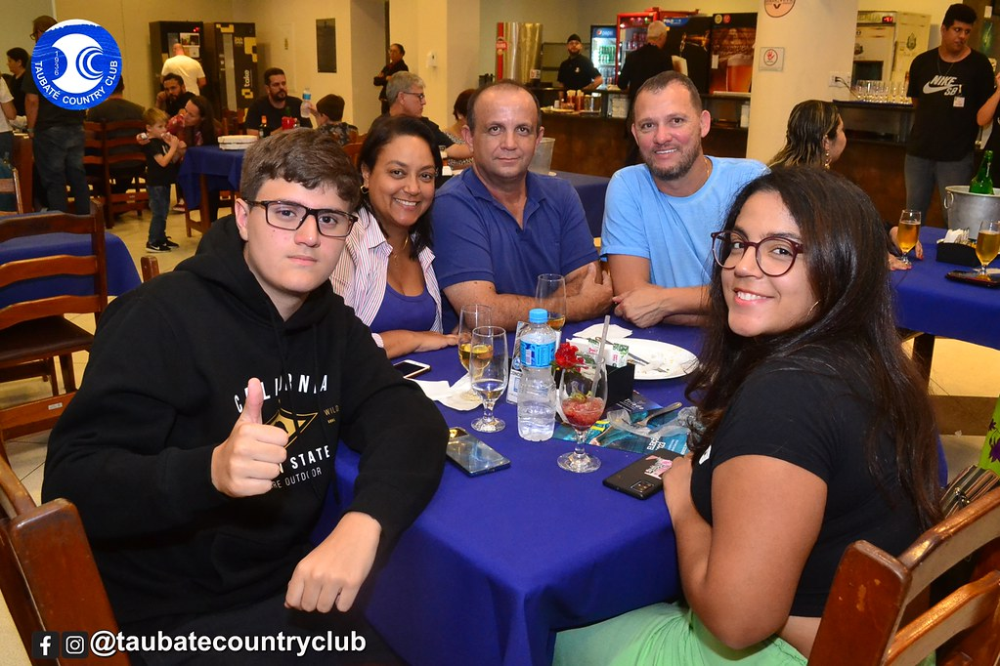
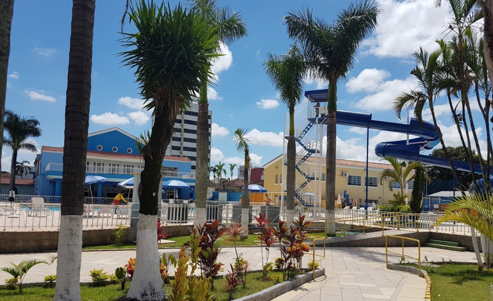
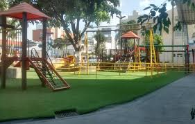

O Taubaté Country Club é uma das instituições mais tradicionais da cidade de Taubaté, localizada no interior de São Paulo. Fundado em 1933, o clube oferece uma ampla gama de atividades esportivas, sociais e culturais para seus associados. Com uma infraestrutura completa, o clube é conhecido por sua elegância e pela variedade de opções de lazer para toda a família.
Esportes
O clube possui várias quadras de tênis, campos de futebol, piscina olímpica, e espaços para a prática de esportes como basquete e vôlei. Também oferece atividades aquáticas e tem um ginásio para esportes internos. Há professores para cada esporte, onde você pode marcar aulas em grupos para aprender e treinar. Além da academia disponível em todos os horários para os socios utilizarem.
 



Espaço para Eventos
O clube conta com salões para eventos sociais e corporativos, sendo uma opção popular para casamentos, festas e encontros de negócios.



Área de Lazer
Além das instalações esportivas, o clube oferece área de lazer com restaurante, bar, e espaço para confraternizações, parques para crianças e espaço com piscinas, jogos, brinquedoteca
Programação Cultural e Social
O Taubaté Country Club organiza eventos sociais ao longo do ano, incluindo bailes, festas temáticas e celebrações sazonais, como as festividades de Carnaval e Natal.
Programação de Carnaval
O Taubaté Country Club costuma realizar eventos animados durante o Carnaval, com bailes e matinês voltados para diferentes faixas etárias. Historicamente, o clube organiza shows de música ao vivo, bailes com temáticas carnavalescas e festas para crianças com concursos de fantasias e brincadeiras.
O clube é uma das principais opções de lazer na cidade, especialmente para quem busca um ambiente familiar e seguro para aproveitar o Carnaval e outras celebrações.
Em resumo, o Taubaté Country Club é um local de tradição, ideal para quem deseja desfrutar de atividades esportivas, eventos sociais e momentos de lazer em um ambiente exclusivo e acolhedor.